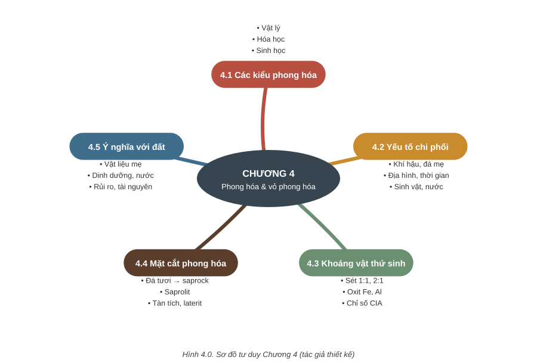
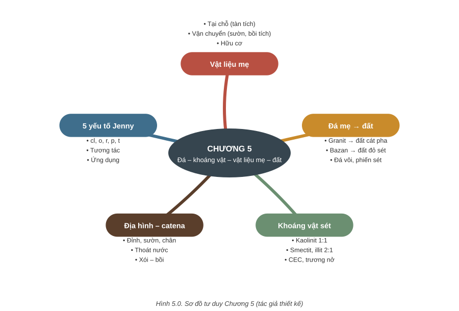
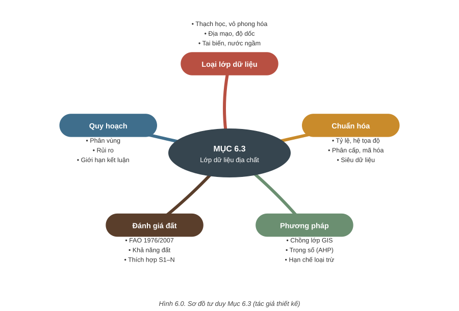

Phần 1 – Lý thuyết
Bài giảng trình chiếu HTML của Chương 4, Chương 5 và Mục 6.3. Bấm vào tên bài để mở trình chiếu đúng bài đó; dùng phím ← → hoặc vuốt trên điện thoại để chuyển slide. Trong giờ học, mở Trang sinh viên trên điện thoại để trả lời câu hỏi tương tác.

- 4.1Phong hóa vật lý, hóa học và sinh học13 slide
- 4.2Các yếu tố chi phối phong hóa và sản phẩm phong hóa12 slide
- 4.3Phong hóa và sự hình thành khoáng vật thứ sinh11 slide
- 4.4Mặt cắt vỏ phong hóa: đá tươi – phong hóa – saprolit – tàn tích10 slide
- 4.5Ý nghĩa của phong hóa và vỏ phong hóa đối với đất10 slide


Phần 2 – Thực tập: làm phiếu trên web
Đăng nhập bằng MSSV và mã 4 ký tự giảng viên công bố ở buổi thực tập (cùng mã điểm danh). Mỗi mẫu khoáng vật hoặc đá có cột ảnh mẫu: chụp ảnh mẫu đang mô tả ngay trên điện thoại để giảng viên kiểm chứng. Bài làm tự lưu nháp; nộp xong, trang hiện ngay phiếu báo điểm tạm tính của hệ thống chấm điểm kèm danh sách chỗ cần sửa — lưu PDF hoặc chụp màn hình để giữ lại. Giảng viên chưa chốt điểm cho tới khi duyệt; điểm chính thức gửi qua email sau khi duyệt.
Ôn bài ở nhà: vào trang làm phiếu, nhập MSSV và mã ôn tập 6 ký tự của lớp (giảng viên công bố) để xem lại các phiếu đã làm trên lớp và làm 5 phiếu ôn tập nhận biết khoáng vật, đá (không tính điểm, làm bao nhiêu lần cũng được, nộp xong có đáp án tham khảo).
Tài liệu thực tập
- KVBảng mô tả 14 khoáng vật mẫu và yêu cầu thực hành
- PDFBảng tra khoáng vật hoàn chỉnh (32 trang)
- PDFHướng dẫn thực hành mẫu khoáng vật (2023, 23 trang)
- PDFDanh sách khoáng vật thực hành Bài 2–5
- PDFPhiếu mô tả khoáng vật bản giấy (dùng khi mất mạng)
Các PDF là bản gốc của bộ môn: đọc và in bình thường; chép chữ ra có thể lỗi dấu. Trong danh sách Bài 2–5, hematit đúng là Fe₂O₃, magnezit là Mg[CO₃].
An toàn: chỉ dùng HCl loãng khi có giảng viên hướng dẫn; không nếm mẫu; rửa tay sau buổi thực tập.
Lịch thực tập: 5 tuần, tuần 6 thi
Tuần 1 bắt đầu thứ Bảy 24/10/2026. Mỗi buổi khoáng vật mô tả 10 mẫu, mỗi buổi đá mô tả 5 mẫu; giảng viên chọn mẫu trong bảng đối chiếu (ghi trong ngoặc). Sinh viên đối chiếu bảng tra để mô tả và gọi tên; điểm chấm theo từng mẫu: mô tả có khớp lý thuyết của khoáng vật hoặc đá đã gọi tên hay không.
| Tuần | Từ ngày | Nội dung | Phiếu online |
|---|---|---|---|
| 1 | 24/10/2026 | Khoáng vật (1/2): 10 mẫu, trọng tâm nguyên tố tự sinh, sulfur, oxit – hydroxit và khoáng vật tạo đá phổ biến | Phiếu 1 |
| 2 | 31/10/2026 | Khoáng vật (2/2): 10 mẫu, trọng tâm silicat, carbonat, sulfat, wolframat, halogenua | Phiếu 2 |
| 3 | 07/11/2026 | Đá magma: 5 mẫu (granit, diorit, gabro, peridotit, riolit, andesit, bazan, obsidian, đá bọt) | Phiếu 3 |
| 4 | 14/11/2026 | Đá trầm tích: 5 mẫu (cuội kết, dăm kết, cát kết, bột kết, sét kết, đá vôi, đá dolomit, laterit, than đá) | Phiếu 4 |
| 5 | 21/11/2026 | Đá biến chất: 5 mẫu (đá phiến sét, phyllit, đá phiến mica, gneis, quarzit, đá hoa, hornfels, amfibolit, serpentinit) | Phiếu 5 |
| 6 | 28/11/2026 | Thi thực tập (hình thức và thời gian do giảng viên công bố) | – |
Mỗi phiếu: bảng mô tả từng mẫu (màu sắc, vết vạch, ánh, độ trong suốt, độ cứng Mohs, cát khai, vết vỡ, hình dạng, tính chất đặc biệt, tên, vai trò đối với đất, giá trị sử dụng) kèm ảnh mẫu, câu hỏi vận dụng và tự đánh giá. Nộp tối đa 2 lần, tính lần cao nhất.